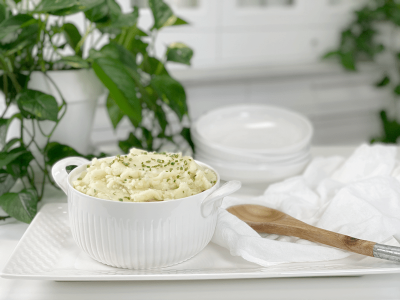
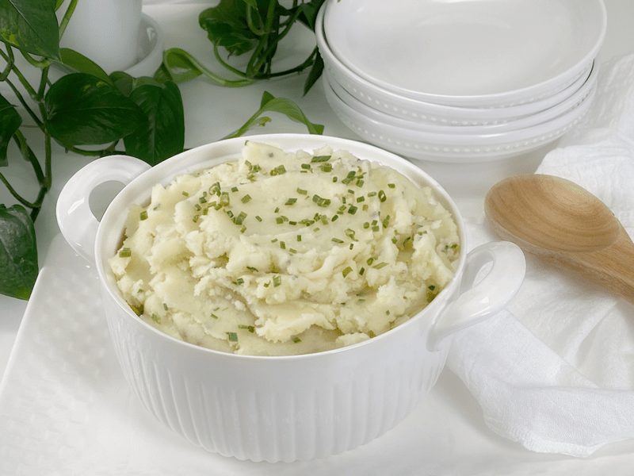
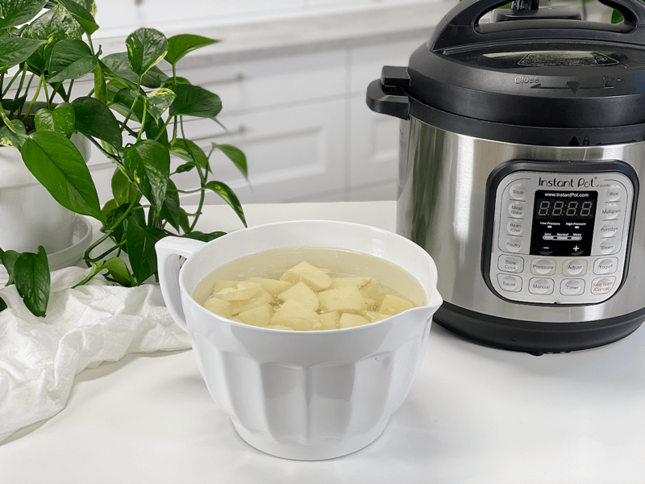
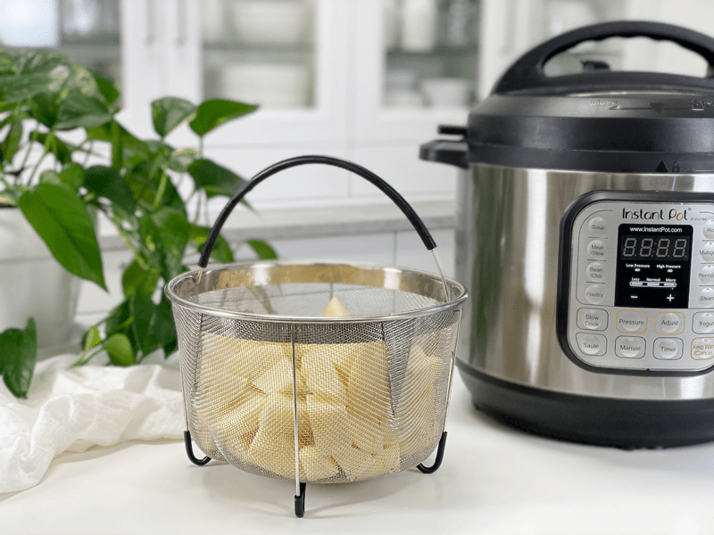
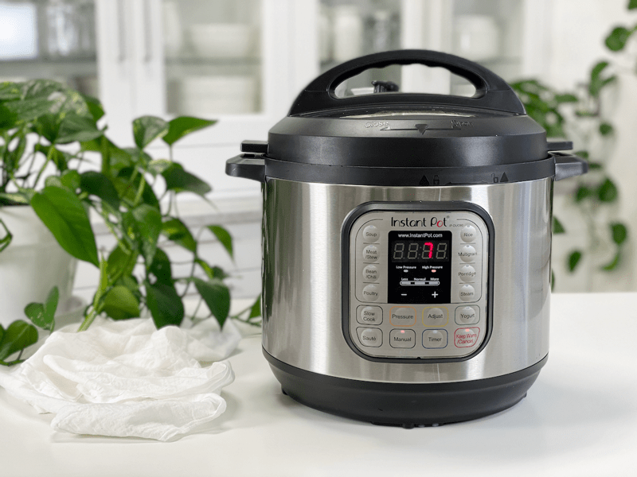
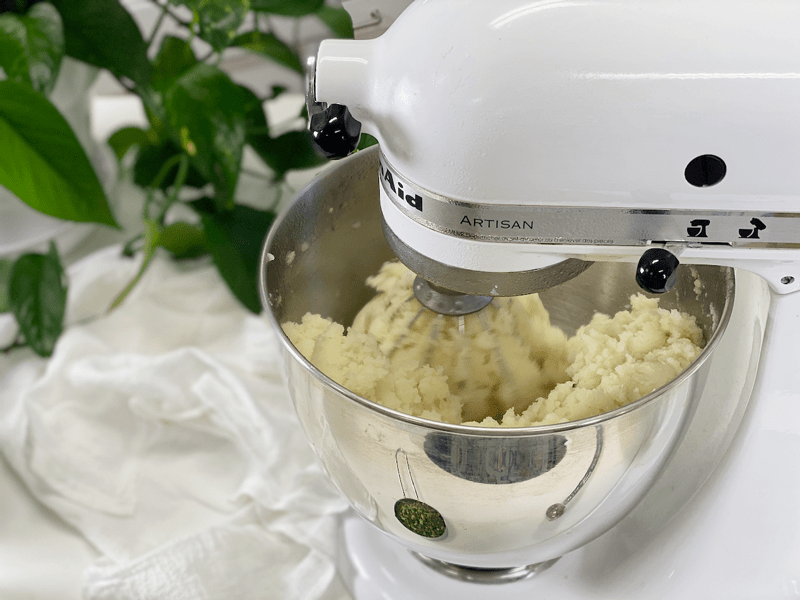
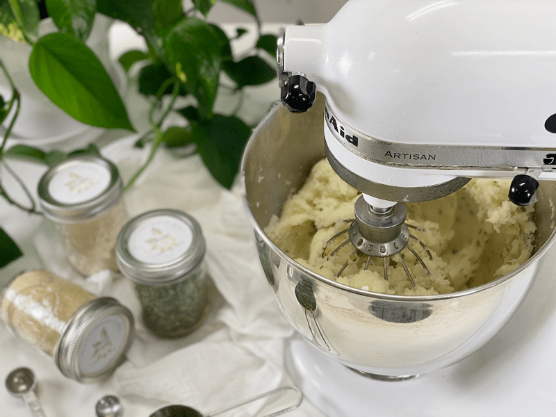
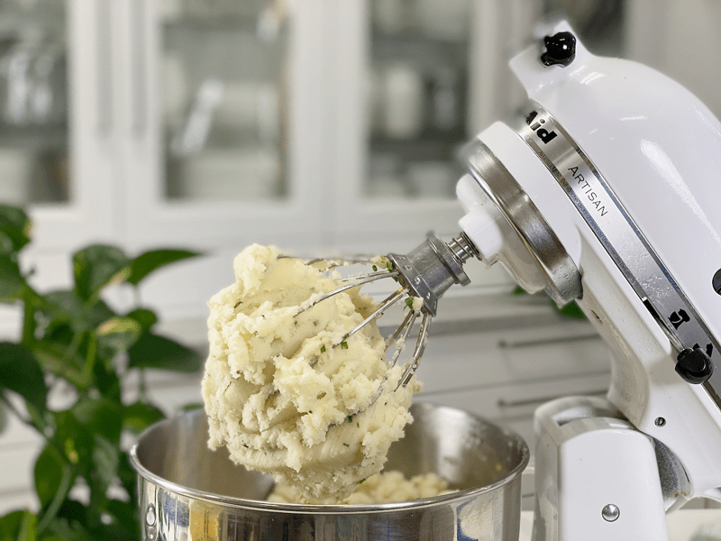

Mashed Potatoes with Chives | Oil-Free
I know what you’re thinking…mashed potatoes, Amie Sue? Doesn’t everyone know how to make mashed potatoes? The simple answer is no. I didn’t make my first batch of mashed potatoes until I was in my late twenties, and that was with my mom’s help over the phone. Plus, if you have lingered around my site long enough, you know that my heart is in teaching and helping those who are new to home cooking as well as those who are veterans of the art. We can ALWAYS learn something new.

When it comes to mashed potatoes, I realize that everyone is entitled to their own opinions about exactly what constitutes the best recipe. To be frank, mashed potatoes are very forgiving, and doesn’t this world need a bit more forgiveness in it? So stick around, and perhaps you can learn from a few tips and tricks that I have picked up along the way.
Mashed Potato Tips
- Your potatoes will cook quicker if you place a lid on the pot.
- Russet potatoes are my first choice due to their softer texture when cooked. I have also used a 50/50 mix of starchy russet potatoes and waxy, buttery Yukon golds.
- Be generous with salt and seasonings but a bit stingy with plant-based milk, which can flatten out the bright, earthy potato taste.

Make Every Bite Count
Start with organic potatoes.
- According to the USDA’s Pesticide Data Program, 35 different pesticides have been found on conventional potatoes. Of these, 6 are known or probable carcinogens, 12 are suspected hormone disruptors, 7 are neurotoxins, and 6 are developmental or reproductive toxins.
- Root vegetables absorb all of the pesticides, herbicides, and insecticides that are sprayed above the ground and eventually make their way into the soil. With potatoes, however, the chemical treatment is quite extensive. During the growing season, they get treated with fungicides. Before harvesting, they get sprayed with herbicides to kill off the fibrous vines. After being dug up, they get resprayed to prevent them from sprouting. Have I shared enough?
Steam them, rather than boiling them.
- Since the potatoes’ nutrients are water-soluble, they WILL leach out of the boiled potato and into the cooking water, which is usually discarded. Steaming them removes far fewer nutrients, which will leave the potato more vitamin-filled.
Practice mindfulness.
- Remember mindfulness when it comes to the relationship between diet, lifestyle, and health. Everything matters, and everything makes a difference. Everything is either complimentary or insulting. So this means that we need to pay attention and be alert, aware, conscious, and mindful.
Yields 7 cups
- 3 pounds (roughly 9 cups) potatoes
- 1/4-1/2 cup plant milk or veggie broth
- 2 tsp granulated garlic
- 1 tsp granulated onion
- 1 tsp sea salt
- 1/4 cup chopped chives, green onions, or parsley (garnish)
Preparation
Several Methods for Cooking the Potatoes: I don’t recommend boiling the potatoes, since a lot of the nutrients get lost in the water.
Option 1 – Steam | Stockpot (locks in nutrition)
-
Wash potatoes, peel (if desired), dice in uniform sizes (so they cook evenly).
- If the potatoes are really small, you can steam them whole.
- Keep the diced potatoes in water during prep, to prevent discoloration. Drain when you are ready to steam.
-
Add about one inch of water to a pot that has a fitted steamer basket.
-
Place potatoes into the steamer basket. Cover pot and turn the heat to high.
-
Steam until the potatoes are tender, about 30 minutes. Time varies depending on the size of the potatoes.
- Continue with your mashing preference.
Option 2 – Steam | Instant Pot
- Wash potatoes, peel (if desired), diced in uniform sizes (so they cook evenly).
- If the potatoes are really small, you can steam them whole.
- Keep the diced potatoes in water during prep, to prevent discoloration. Drain when you are ready to steam.
- Add 2 cups of water to the Instant Pot, place the steam basket inside the pot that is loaded with the potatoes.
- You don’t want the potatoes sitting in too much water. If using a 6-quart unit, use only 1 cup of water.
-
Attach and secure the lid and turn the pressure valve to the “Sealing” position.
-
Press “Manual,” place on high pressure, and adjust the cooking time for 7 minutes.
-
When machine beeps, do a quick release by turning the valve to the “Venting” position. Be very careful of the steam shooting out of the valve.
- Continue with your mashing preference.
Option 3 – Bake
- Preheat the oven to 400 degrees (F).
- Scrub the russet potatoes, making sure to pierce them a few times. This technique creates air vents to release steam while cooking.
- Place the potatoes on a baking sheet or directly on the oven rack.
- Bake for roughly 45 minutes or until “squeezable.” (Please use an oven mitt for handling safety.)
- Scoop out the flesh from the skins. See below for mashed potato texture options.
- Tip – Save the skins from the baked potatoes and load them with the mashed potatoes.
- Continue with your mashing preference.
Methods to Use for Different Potato Textures
Fluffy Potatoes
- Using an extruding masher or a ricer, mash hot potatoes until smooth.
- Lightly mix in some plant milk or broth, just until blended.
- Salt and season to your liking.
- The texture will be fluffy.
Whipped Potatoes
- Use a hand or stand mixer when light and airy texture is desired.
- Mix the hot potatoes just until smooth, about 30 seconds.
- Add plant milk or broth, salt, and seasoning, pulsing the machine in short bursts at medium speed. When light and creamy, stop mixing immediately. Over processed potatoes can quickly become sticky and unappealing.
Rustic, Chunky Mashed Potatoes
- For a more rustic, hearty texture, do not peel the potatoes. By leaving the skins on, you are boosting the nutritional content. (You get a healthy brownie point for that!)
- Using a hand-held electric beater or a hand-held potato masher, lightly mix in some plant milk or broth, just until blended.
- Salt and season until seasoned to your liking.
Keep Warm Until Ready to Serve
- Transfer the mashed potatoes to a serving bowl, cover tightly, and keep in a warm place, like the back of the stove or in the oven set on warm. Make sure the serving bowl is oven-safe if you do this. Potatoes will stay hot for at least 30 minutes. To keep longer, place covered bowl in a pan holding about an inch of gently simmering water. Before serving, mix well.
- You can also use a slow cooker on low to keep the potatoes hot until serving. The Instant Pot also works as a warmer.
Food Storage
When it comes to storing hot foods, we have a 2-hour window. You don’t want to put piping hot foods directly into the refrigerator. However, If you leave food out to cool, and forget about it you should, after 2 hours, throw it away to prevent the growth of bacteria. (source) Large amounts should be divided into smaller portions and put in shallow covered containers for quicker cooling in a refrigerator that is set to 40 degrees (F) or below.
- Fridge – In a sealed container, the potatoes will keep for up to 7 days.
- Freezer – You can also freeze in individual reheating portions for up to 3 months.
-

-
Keep the potatoes in cold water as you are dicing them up.
-

-
Place the potatoes in the steamer basket.
-

-
Secure the lid, switch the pressure valve to “seal”, hit “Manual, set on high pressure, and adjust the time to 7 minutes. Kick your feet up for… 7 minutes.
-

-
Lightly mash the potatoes before adding the seasoning.
-

-
Add the seasoning and liquid, mashing it to the texture you desire.
-

-
Perfectly whipped!
© AmieSue.com